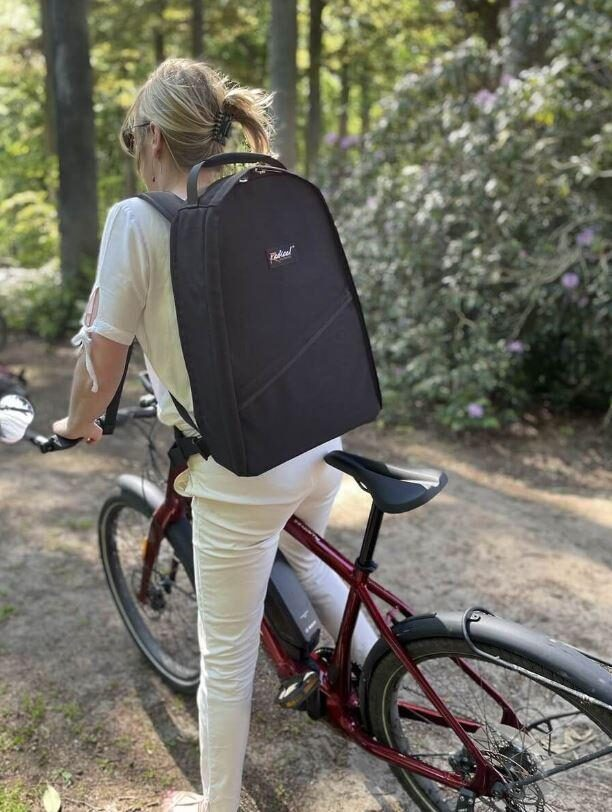

Medische Tassen doctor's backpack
This backpack has been developed by Hubert for the Belgian company Medische Tassen (Medical bags) and is intended for the general practitioner who makes house calls on foot, bicycle or public…
◆ Designed and built by Radical Design as an OEM / portfolio project. Not sold directly from this workshop -- contact us or the brand for availability.
About this product
This backpack has been developed by Hubert for the Belgian company Medische Tassen (Medical bags) and is intended for the general practitioner who makes house calls on foot, bicycle or public transport. This application is fully consistent with the values we have as a company. The doctor, who is trying to keep people healthy, can in this way think about his/her own health at the same time, avoiding taking the car and getting exercise and taking fresh air.
With the doctor backpack, we can give customers a good idea of what we are technically capable of. It is filled with our expertise in the area of reliability and ease of use.
To order go to: www.medischetassen.be